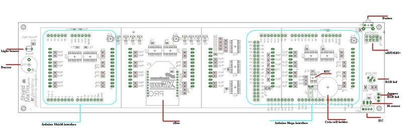
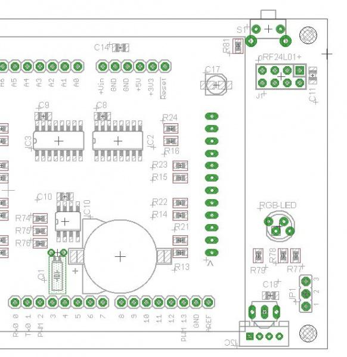
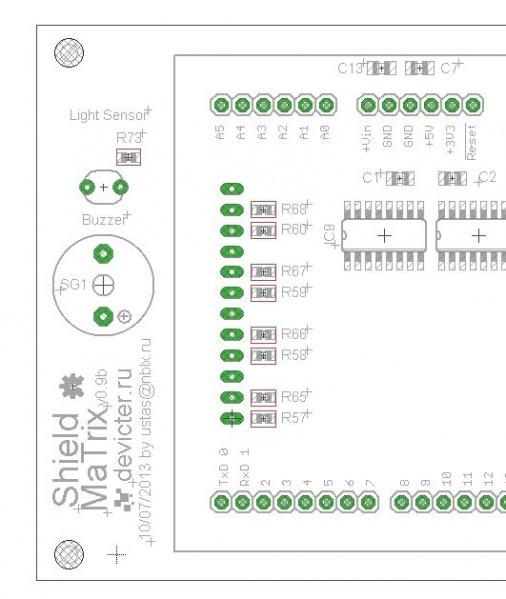
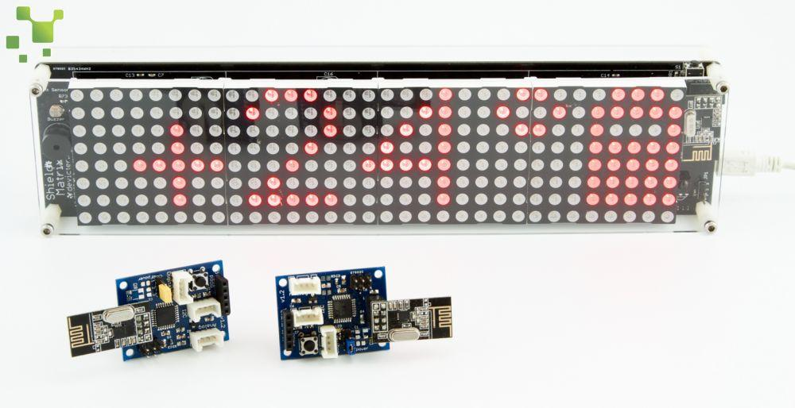

Shield MaTrix is a stackable Shield for Arduino, which makes it possible to learn programming using the most simple sensors on board.
Model: 830069001

To display different information on the LED matrix display uses dynamic . At the same time information is displayed only one line ( corresponding LED lights (red and (or ) green ) ) , all other lines - repaid. The next step - the previous line is extinguished and ignited the next line ( for her current LEDs). Switching rows is very fast and eyes perceive this switch as a single image .
To minimize the number of pins involved are two different types of chips: the shift registers (used for control columns) and a demultiplexer ( control lines).
Shift registers included chain and connected via SPI ( pins involved are described below).
Demultiplexer has three address inputs (DA0, DA1, DA2) - a combination of "0" and "1" at the entrances clearly points to one of the 8 outputs, which will be active level . Additionally the demultiplexer has control inputs (E1, E2, E3) - with the first two (E1 and E2, they are connected in our scheme ) organized a complete quenching of the matrix , and with the input E3 - organized brightness adjustment (using PWM) .
Pins on the board, involved on Arduino Mega:
The right side of the board (when viewed from the matrix) are:

On the left side of the board are:

To use the various components Shield MaTrix requires the following libraries:
Displays information on the matrix - MaTrix - MaTrix (including a simple display test and two real time display sketches.)

Additionally required libraries that are used during operation of libraries:
Only two libraries require little comment on their use:
Since the IR receiver connected to digital pin of 5 must file / IRremote / IRremoteInt.h correct code as follows:
... // Arduino Mega #if defined(__AVR_ATmega1280__) || defined(__AVR_ATmega2560__) //#define IR_USE_TIMER1 // tx = pin 11 //#define IR_USE_TIMER2 // tx = pin 9 #define IR_USE_TIMER3 // tx = pin 5 //#define IR_USE_TIMER4 // tx = pin 6 //#define IR_USE_TIMER5 // tx = pin 46 ...
Initialize the module as follows:
... //iBoardRF24 radio(CE,CSN,MOSI,MISO,SCK,IRQ); iBoardRF24 radio(41,40,39,38,37,19); ...
To use the library in your sketch MaTrix need to declare a function void setup () to enter the following line of code:
#include <SPI.h> #include <MaTrix.h> //connection library MaTrix MaTrix mymatrix; //object creation mymatrix
byte array[8][8] - main array. The data from this array is determined that the currently displayed on the LED matrix
byte array[8][8] = { // An array of 64 bytes
{B00000000, B00000000, B00000000, B00000000, B00000000, B00000000, B00000000, B00000000}, // строка 7
{B00000000, B00000000, B00000000, B00000000, B00000000, B00000000, B00000000, B00000000}, // строка 6
{B00000000, B00000000, B00000000, B00000000, B00000000, B00000000, B00000000, B00000000}, // строка 5
{B00000000, B00000000, B00000000, B00000000, B00000000, B00000000, B00000000, B00000000}, // строка 4
{B00000000, B00000000, B00000000, B00000000, B00000000, B00000000, B00000000, B00000000}, // строка 3
{B00000000, B00000000, B00000000, B00000000, B00000000, B00000000, B00000000, B00000000}, // строка 2
{B00000000, B00000000, B00000000, B00000000, B00000000, B00000000, B00000000, B00000000}, // строка 1
{B00000000, B00000000, B00000000, B00000000, B00000000, B00000000, B00000000, B00000000} // строка 0
// red3 green3 red2 green2 red1 green1 red0 green0
};
Each bit corresponds to the corresponding LED in the matrix. 0 - LED "extinguished", 1 - LED "lit"
byte shadow[8][8] - additional ("shadow") array.
Library functions used for organizing various effects and scrolling text (data from the shadow of the array for a particular effect rewritten the rule of the "shadow" of the array in the main).
byte shadow[8][8] = { //An array of 64 bytes
{B00000000, B00000000, B00000000, B00000000, B00000000, B00000000, B00000000, B00000000}, // строка 7
{B00000000, B00000000, B00000000, B00000000, B00000000, B00000000, B00000000, B00000000}, // строка 6
{B00000000, B00000000, B00000000, B00000000, B00000000, B00000000, B00000000, B00000000}, // строка 5
{B00000000, B00000000, B00000000, B00000000, B00000000, B00000000, B00000000, B00000000}, // строка 4
{B00000000, B00000000, B00000000, B00000000, B00000000, B00000000, B00000000, B00000000}, // строка 3
{B00000000, B00000000, B00000000, B00000000, B00000000, B00000000, B00000000, B00000000}, // строка 2
{B00000000, B00000000, B00000000, B00000000, B00000000, B00000000, B00000000, B00000000}, // строка 1
{B00000000, B00000000, B00000000, B00000000, B00000000, B00000000, B00000000, B00000000} // строка 0
// red3 green3 red2 green2 red1 green1 red0 green0
};
// Color #define RED 0 #define GREEN 1 #define YELLOW 2
// delay iteration in "drawing" effects (ms) #define VSLOW 500 #define SLOW 150 #define MID 100 #define FAST 50 #define VFAST 25
// effects #define FADE 4 #define LEFT 3 #define UP 1 #define DOWN 2 #define NONE 0
// hardware data #define BRIGHT 44 // brightness (pin 44 - PWM) #define LightSENS A7 // light sensor
mymatrix.init();
mymatrix.clearLed();
mymatrix.brightness(byte brightLevel);
Example of use:
mymatrix.brightness(177);
mymatrix.get Brightness();
Example of use:
Serial.println(mymatrix.getBrightness());
printString(String s, byte pos, byte color, unsigned char *Font, char effect, int speed);
Example of use:
mymatrix.printString("123", 3, GREEN, font6x8, UP, SLOW);
printRunningString(String s, byte color, unsigned char *Font, int speed);
Example of use:
mymatrix.printRunningString("MaTrix test!", RED, font6x8, FAST);
printArray();
printShadow();
printChar(unsigned char sym, byte pos, byte color);
Attention! Font that is used when calling the function must be defined using the setFont.
printCharShadow(unsigned char sym, byte pos, byte color);
printStr(unsigned char *s, byte pos, byte color);
Attention! Font that is used when calling the function must be defined using the setFont.
printStrShadow(unsigned char *s, byte pos, byte color);
Current version of the library MaTrix
All the components used to produce the product.
Please list your question here:
If you have questions or other better design ideas,
| Revision | Descriptions | Release |
| 0.9 | Prototype | 11.04.2013 |
| 0.9b | Public version | 27.10.2013 |
Bug Tracker is the place you can publish any bugs you think you might have found during use. Please write down what you have to say, your answers will help us improve our
products.
The Additional Idea is the place to write your project ideas about this product, or other usages you've found. Or you can write them on Projects page.
This product can be purchased:
China (shipping worldwide)
Seeed store
Russia
Devicter store
Other related products and resources.
This documentation is licensed under the Creative Commons Attribution-ShareAlike License 3.0 Source code and libraries are
licensed under GPL/LGPL, see source code files for details.
Links to external webpages which provide more application ideas, documents/datasheet or software libraries
Copyright (c) 2008-2016 Seeed Development Limited (www.seeedstudio.com / www.seeed.cc){kind=link}